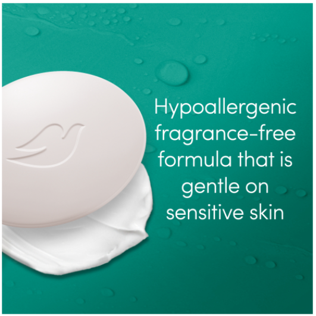
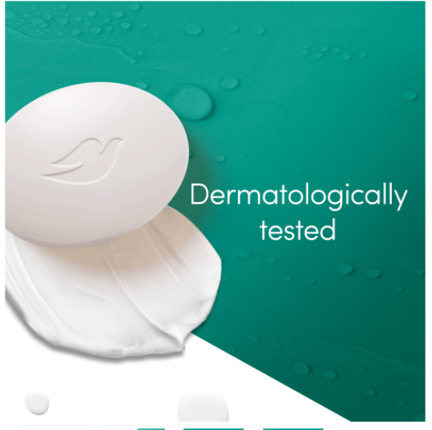
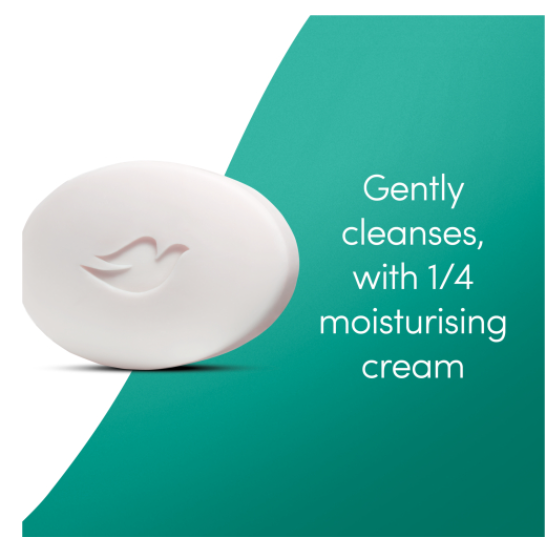
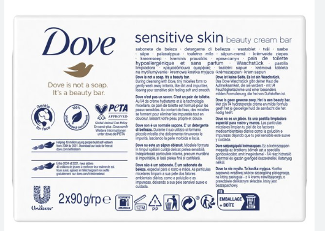
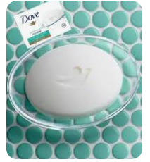
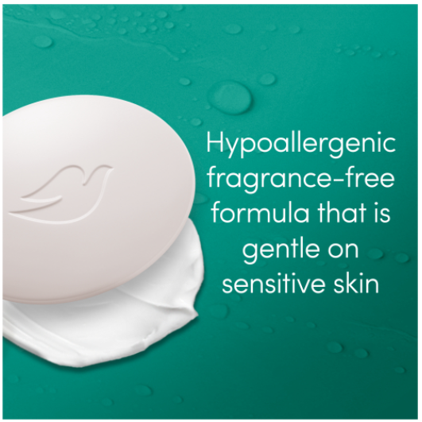
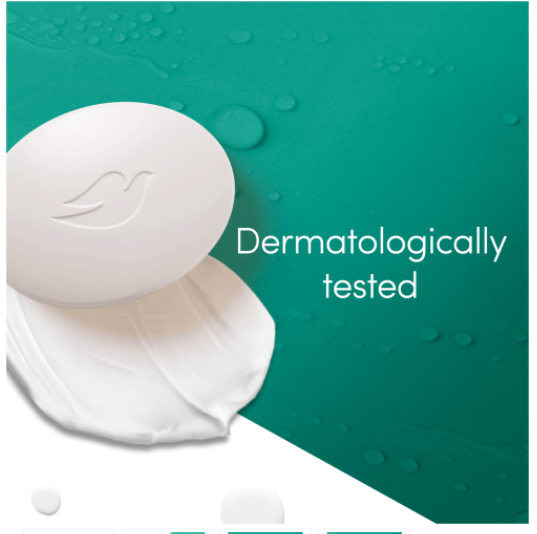
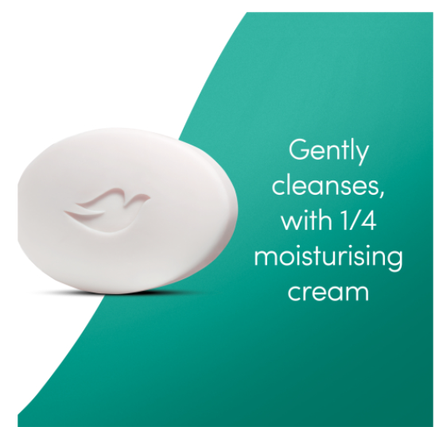
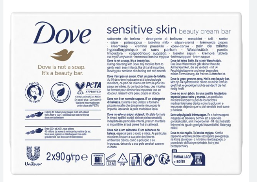
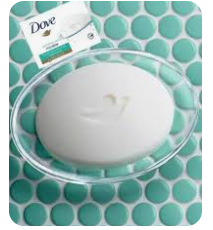

Price: R24
Description: Dove Soap Bar Sensitive 90g delivers ultra-gentle cleansing for sensitive skin. The combination of micellar water, gentle cleansers and moisturising ingredients helps to nourish skin and protect its natural moisture. Dermatologically tested and suitable for daily use on your body and hands.
Stock availability: 45
| Product information table | |
|---|---|
| Weight: | 90g |
| Quantity in pack: | 1 |
| Ingredients: | Aqua, Cocamidopropyl Betaine, Sodium Hydroxypropyl Starch Phosphate, Lauric Acid, Sodium Lauroyl Glycinate, Sodium Lauroyl Isethionate, Sodium Chloride, Glycerin, Hydrogenated Soybean Oil, Helianthus Annuus Seed Oil, Parfum, Sodium Benzoate, Caprylyl Glycol, Sodium Hydroxide, Citric Acid, Sodium Isethionate, Stearic Acid, Palmitic Acid, Sodium Gluconate, Argania Spinosa Kernel Oil, Caprylic Acid, Guar Hydroxypropyltrimonium Chloride, Hydroxystearic Acid, Hexyl Cinnamal, Limonene, Linalool |